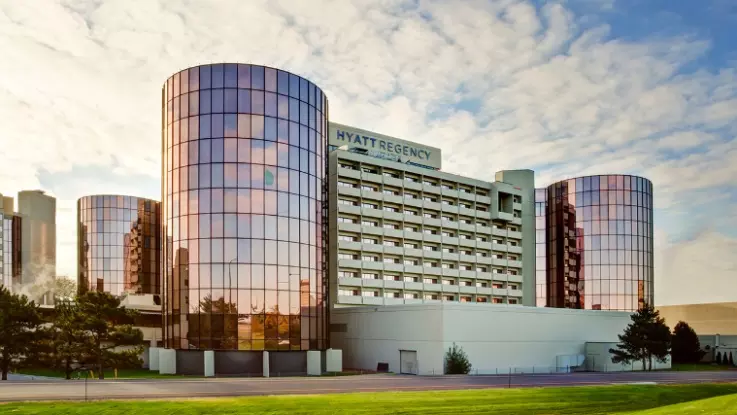
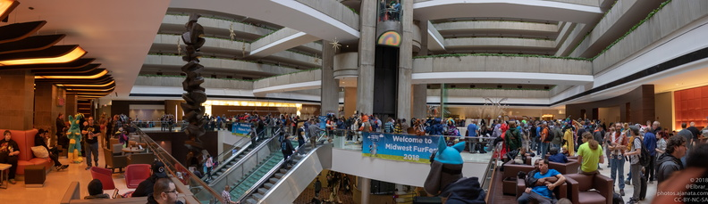
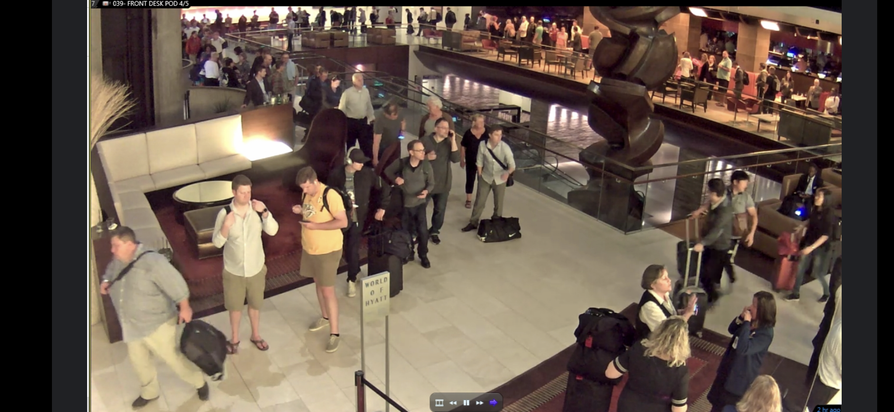

Since 2015, I have been masternig my hospitality skills. Communication and teamwork are my bread and butter. Working with people can be hard especially in fast paced environments of ever changing needs and requests.
It all began in 2015 in Chicago working at a large airport and convention center hotel that has 1,095 rooms. It was a 4 star hotel that often housed business travelers, stranded passengeres from cancelled flights in one of America's largest airports and large scale conventions.
During my time at the Hyatt Regency O'Hare, I started as a front desk host and when COVID hit in 2020, I finished my career there as an Assistant Front Office Manager. I was the contact point for multiple clients that were contracted with us. Oversaw 30 staff members from 4 different operational departments and ensured brand and quality standards were held accross the board. I assisted in training new employees, delegating tasks, and share feedback. Even back then before I had any coding knowledge, I worked though OPERA yo create reports that helped us boost our customer service rankings. After implimenting the knowledge from my reports, guest satisfaction increased from 72% to 84%.
You might be wondering how can hospitality be integrated into the world of IT? There is a huge opportunity here for hiring people from hospitality into a world of computers and date. Like mentioned before, I come from a background of people and am always in a place of problem solving and thinking outside the box while being aware of our standard practices. I'm familiar with managing large amounts of data and multitasking on multiple platforms that all interconnent to create the perfect stay for our guest from the front while working on any issues in the back.
Every weekend we would welcome thousands of new guests and almost every weeknight, we welcomed the hundreds of people that sometimes all showed at once from cancelations at the airport. I treat every person as an individual with their own needs and requests and work with my team and multiple departments to ensure a hassle free stay.
 